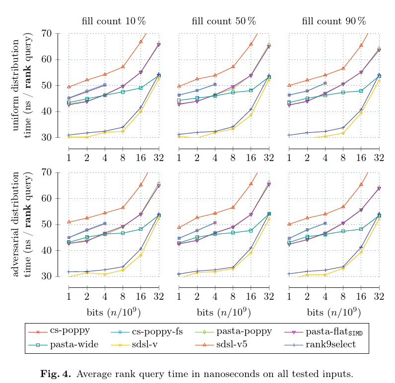

|
pasta_bit_vector
1.0.1
Bit Vector with Compact and Fast Rank and Select Support
|
|
pasta_bit_vector
1.0.1
Bit Vector with Compact and Fast Rank and Select Support
|
The code in this repository is very easy to use. To use our fastest implementation you can simply use the code below. If further tuning is required, we recommend to see the Configuration .
Here, we present the most interesting results from our paper [1]. For more information on the hardware used and our competitors, please look to the paper where we explain the experiments in detail. Additionally, you can look at our repository that contains all scripts needed to reproduce the results.
First, we compare the additional space that is required for the rank and select data structures.
Next, we look at the query time for rank queries w.r.t. different fill counts of the bit vector. 
Then, we look at select queries in the same setting.
Finally, we compare our own implementations that can be easily switched using the Configuration .